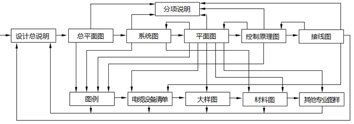

任何复杂的事物都是由简单的事物组成的，在电气工程图中也不例外，这是分析复杂电路图的基本出发点。电气工程及自动化工程中，主要包括发电、电能传输、电能转换、控制技术、电能储存、电能利用六大内容，其中控制技术(包括继电保护)是核心技术，也是难点，有时也很复杂。昌晖仪表在本文就分析复杂电路图、控制电路、自动化仪表控制电路和微机控制检测保护电路的方法、步骤、技巧和读图注意事项进行具体的讲述。

分析复杂电路图的方法及思路
1、将其解剖成一个个单元电路或组件。一般条件下，功能及作用为同一效果的会经常画在一起(但实物却不一定放在一起，这里要注意！)。
2、确定每个单元或组件中各个元件的功能和作用。
3、确定每个元件的电源设置，如交流、直流、电压等。
4、确定各个元件的输入及输出是什么信号，以及信号值或范围，如接点信号(常开、常闭及其在电路中的分布情况)、模拟信号(0-10mA、4-20mA、1-5V)并判断其信号性质(交流AC、直流DC、脉动)、数字信号(输入点数、输出点数及触点容量，如DC30V、DC0.1A)、输入或输出阻抗(如250Ω、75Ω等)。不要过多考虑或分析各个元件的内部构造和原理，主要是掌握其功能和输入输出信号，这是分析的关键。
5、确定单元或组件内各个元件间的接口元件或电路及其功能，如变送器、转换器、安全栅、配电器及其输入输出信号。
6、确定单元或组件间的接口元件或电路及其功能。
7、确定各元件间、各单元间的反馈回路及其元件或电路，并确定其反馈信号的性质。
8、是将其上述分析画在一个框图中，并标出元件或电路间的信号。
9、按框图分析出该电路的功能和作用。
10、确定上述分析，解剖要细致，不要漏掉任何一个环节。
分析接触器-继电器控制电路的方法和技巧
接触器-继电器配以行程开关、主令电器、按钮和检测装置或仪表提供的信号接点，可以组成复杂的控制电路，如电梯、电动起重机、大型锅炉风机、给水泵电动机、重要负荷的大型电动机及供配电系统的继电保护等。按照上述方法即可进行分析和识读。
1、确定接触器、继电器（包括电流、电压、错相、接地、差动、短路、温度、压力、流量、时间、功率、瓦斯、环流、中间、信号、闪光、重合闸、阻抗、零序、频率等继电器）的功能作用及其触点（常开、常闭、延时等）的分布情况（这个分布很重要，是分析复杂电路的关键，不能漏掉任何一个）；
2、确定接触器、继电器得电或失电后其触点的动作结果在所在回路里起到的作用，是断开、接通及回路元件的动作情况；
3、2中的回路触点的动作引起其他回路的动作情况；
4、其他回路的动作又引起各个回路的动作情况；
5、按1-4逐一分析每个回路的动作情况，最后即可分析出整个电路的动作结果。在分析过程中应确定继电器的整定值或动作值。
分析自动化仪表控制电路的方法和技巧
自动化仪表控制电路是由传感器(如热电偶、热电阻、压力传感器、孔板等)、变送器或转换器或配电器、安全栅、计算器、给定器、调节器、显示器、辅助单元和执行器组成的，除了控制外，该电路还要显示被测量的值或记录累计被测量的值。
1、确定被测量和传感器的输出信号值(mV或mA或Ω)，确定被测量的类别和个数；
2、确定各台变送器将被测量或传感器的输出信号变换成统一的标准直流信号值，并确定将标准信号引入显示仪表或调节器的位置及显示仪表或调节器的功能；
3、确定各台转换器将被测量的0-10mA、0-10mV或20-1000kPa信号转换后与其他系列仪表的连接方式；
4、确定计算单元各计算器将标准直流信号进行加、减、乘、除、开方、积算等运算后，将其信号与其调节器的连接方式；
5、确定定值器的给定值，将上述计算后的信号与给定值比较得出偏差；
6、确定偏差引入的位置及调节器的性质(比例、积分、微分)，运算后发出的调节控制信号传给执行器，实现闭环控制；
7、执行器按调节控制信号动作驱动调节机构改变操纵变量，进行自动控制；
8、确定其他装置，如操作器、选择器、阻尼器、限幅器、安全栅的功能及其电源、输入和输出信号等；
9、确定指示、记录、积算、报警等辅助装置的功能和接线；
10、按1-9逐一分析每个检测系统及其与其他系统的连接或关系；
11、熟练掌握仪表自检系统所有元件的功能、作用以及输入和输出信号，其中配电器是连接变送器到微机控制装置的枢纽。实质上它是一个模数转换器，是把模拟信号转换成数字信号的装置，微机控制装置只识别数字信号，然后根据设定的程序输出相应的信号，通过电动操作器、伺服放大器去驱动执行器。
分析微机控制、保护、检测电路的方法和思路
微机控制、保护、检测电路是在上述电路上发展起来的，不同的是它简化了电路的结构。如果不考虑微机本身的结构原理和运行程序，微机控制、保护、检测电路则是最简单的电路。
1、确定控制量的性质(是开关量，如断开、闭合；还是数字量，如电压、电流、频率、功率、温度、压力、流量、物位、机械量、成分分析量等)；
2、确定变送器或传感器，它将会把控制量转换成统一的电信号(mA或mV或Ω)；
3、确定模-数转换器，它将会把电信号转换成微机能识别的数字信号；
4、微机控制装置一般都是专门为特定的控制、检测系统而设计制造的，它的程序控制系统是随机配置的，是按控制或检测要求而设计编制的；
5、确定微机的输出信号及与执行装置之间的接口，一般由操作器、放大器构成；
6、确定机房及总线的设置，如打印、显示器及常用操作程序等；
7、微机型继电保护电路系统监控网络是近几年发展起来的新技术，员员园噪灾 的变电装置均设置微机型继电保护电路，它的实际电路比继电器继保电路简单得多。
①变压器保护柜的主要元件是测控装置，如变压器差动保护装置、变压器后备保护装置、非电量保护装置。非电量保护装置的信号来自温度、瓦斯、油分析等传感器经转换器引来的信号；差动保护和后备保护装置的信号来自互感器，这与继电器保护是相同的。
②线路保护柜的主要元件是线路保护装置和线路测控保护装置，它们的信号来自互感器，同样与继电器保护是相同的。
③电能计量装置的信号来自互感器。
④上述三种装置的输出分别经过以太网网关装置接至网络交换机，穿过间隔层引至以太网。也就是说将所有的信号都引到了以太网，以太网说得通俗一点就是计算机通信网络的总线。
⑤以太网上连接的主要是主控室的设备，如GPS(Global Positioning System，全球定位系统)、远动通信装置、操作人员的计算机、并配有打印机、电话，接受远方调度员的指令，工作人员均在计算机上进行操作。